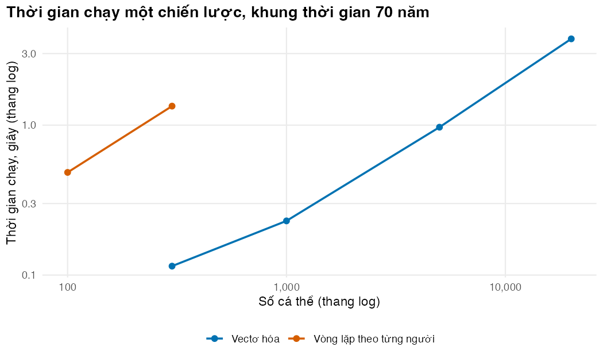

if (!isTRUE(l10n_info()[["UTF-8"]])) invisible(Sys.setlocale("LC_CTYPE", "en_US.UTF-8"))
source("../_shared/R/helpers.R")
source("../_shared/R/vn_data.R") # course-wide values: prices, threshold, life table
source("code/model.R")
library(ggplot2)
library(bench)
p <- load_hiv_params() # params/hiv.csv + the shared Vietnamese inputs
N_BASE <- BASE_N # base-case population (defined once in model.R, shared with Lesson 5)
N_SMALL <- 300 # small population for the equivalence test and the head-to-head benchmark
N_RED <- 100000 # people in the "reduce to a cohort model" verification
YEARS_RED <- 20 # its time horizon, years
N_EX <- 50 # population size in Exercise 1
FIT_MONTHS <- 36:60 # window (years 4-5) for the cross-sectional fit indicatorsBài 3: Vectơ hóa theo cá thể và đo hiệu năng
Đảo thứ tự vòng lặp để mô phỏng hàng chục nghìn người, chứng minh kết quả không đổi, đối chiếu với mô hình đoàn hệ và đo xem nhanh hơn bao nhiêu
Vì sao bạn nên quan tâm?
Một cán bộ ở Bộ Y tế hay ở CDC tỉnh cần ước tính ngân sách xét nghiệm tải lượng cho năm tới. Một lượt xét nghiệm hằng năm cho 184,214 người đang điều trị ARV sẽ tốn khoảng 180 tỷ VNĐ nếu tính theo bảng giá BHYT của bệnh viện hạng đặc biệt, bằng lương tối thiểu vùng I cả năm của chừng 2,800 người lao động (Báo Lào Cai 2025; Bộ Y tế 2024; Chính phủ 2025). Xét nghiệm 6 tháng/lần sẽ nhân đôi khoản này. Muốn biết khoản tiền đó mua được bao nhiêu sức khỏe, ta phải mô phỏng hàng chục nghìn người, nhiều lần, trước cuộc họp ngân sách chứ không phải sau nó. Bài này giúp bạn làm mô hình chạy đủ nhanh, chứng minh bản nhanh vẫn đúng, và đọc kết quả phân tích cơ sở đầu tiên.
Mục tiêu học tập
Sau bài này, bạn có thể:
- Chuyển một mô phỏng vi mô viết bằng vòng lặp theo người thành phiên bản vectơ hóa (vectorisation) theo cá thể.
- Chứng minh hai phiên bản cho kết quả giống hệt nhau bằng cách sắp xếp số ngẫu nhiên đúng thứ tự, và chứng minh mô hình đúng bằng cách thu nó về mô hình đoàn hệ.
- Đo hiệu năng (benchmarking) bằng
bench::mark()vàbench::press(), đọc đúng cột bộ nhớ, và tìm điểm nghẽn bằngRprof(). - Phân biệt xác minh (verification), kiểm tra khớp với mục tiêu đã dùng để chọn tham số, và thẩm định ngoại (external validation).
- Chạy phân tích cơ sở với quần thể lớn và báo cáo kèm sai số Monte Carlo.
Ý chính
- Vectơ hóa đảo thứ tự vòng lặp: “với mỗi tháng, cho mọi người cùng lúc”. Vòng lặp theo thời gian vẫn còn; trí nhớ không mất vì mỗi người có một phần tử riêng trong mỗi vectơ.
- Nếu rút số ngẫu nhiên theo đúng thứ tự, vòng lặp và bản vectơ hóa cho kết quả giống hệt đến từng chữ số.
- Phép xác minh mạnh nhất: tắt tính không đồng nhất, trí nhớ và theo dõi, rồi so với vết của mô hình đoàn hệ tương ứng; hai bên phải khớp trong phạm vi sai số Monte Carlo.
mem_alloccủabenchlà tổng bộ nhớ đã cấp phát, phần lớn là rác bị thu hồi ngay, không phải bộ nhớ đỉnh.- Khớp với số liệu đã dùng để chọn tham số là kiểm tra độ khớp (thẩm định nội), không phải thẩm định ngoại. Số liệu không dùng để chọn tham số mới cho thông tin, và khi đầu ra lệch, phải giải thích được vì sao.
- Đo trước, tối ưu sau:
benchđo,Rprof()chỉ ra thời gian thật sự đi đâu.
Nội dung
Vì sao vòng lặp trong R chậm
Mỗi lần R chạy x + y với hai số đơn, nó phải đọc lệnh, kiểm tra kiểu dữ liệu, cấp phát kết quả rồi mới cộng. Với hai vectơ dài 10,000 phần tử, các bước kiểm tra đó chỉ làm một lần, còn phép cộng chạy trong mã C đã biên dịch. Vòng lặp theo người ở Bài 2 gọi transition_probs() một lần cho mỗi người mỗi tháng. Phiên bản vectơ hóa gọi đúng hàm đó một lần mỗi tháng cho cả quần thể (Krijkamp và c.s. 2018).
Đảo thứ tự vòng lặp
Không thể bỏ vòng lặp theo thời gian, vì trạng thái tháng \(t+1\) phụ thuộc trạng thái tháng \(t\). Nhưng các cá thể độc lập với nhau, vì không có lây truyền hay tranh chấp nguồn lực, nên ta xử lý mọi người cùng lúc trong mỗi tháng. Ba bước của Bài 2 giữ nguyên; chỉ cách viết thay đổi:
| Bước | Vòng lặp theo người | Vectơ hóa |
|---|---|---|
| Tử vong | if (u[i, t] < pr$die) new_state <- 5L |
new_state[dies] <- 5L |
| Đổi trạng thái virus | NEXT_VIRAL_STATE[state] |
NEXT_VIRAL_STATE[state[moves]] |
| Kháng thuốc | else if (u[i, t] < pr$die + pr$move + pr$adr) res <- 1L |
res[gets_adr] <- 1 |
| Giá trị | cost <- cost + ... (một số) |
cost <- cost + ... (một vectơ) |
Lưu ý && và || dùng cho một giá trị logic, còn & và | dùng cho vectơ. Nhầm hai loại này là lỗi phổ biến khi chuyển mã.
Cùng số ngẫu nhiên, cùng kết quả
Ở Bài 2, ma trận u có kích thước người × chu kỳ. R lấp ma trận theo cột, nên cột \(t\) chứa đúng \(n\) số mà runif(n) trả về khi được gọi một lần ở chu kỳ \(t\). Phiên bản vectơ hóa vì vậy không cần rút trước toàn bộ ma trận mà vẫn nhận đúng các số của phiên bản vòng lặp. Khi kết quả giống hệt nhau, ta có bằng chứng rằng phiên bản nhanh không thay đổi mô hình.
Xác minh bằng cách thu về mô hình đoàn hệ
Hai phiên bản giống nhau chưa chứng minh cả hai đúng. Phép thử cần có là so với một mô hình ta tin: mô hình đoàn hệ. Nếu ta tắt mọi thứ mà mô hình đoàn hệ không biểu diễn được (mọi người giống hệt nhau, không trí nhớ, không kháng thuốc, không theo dõi), vết mô phỏng vi mô phải bằng vết đoàn hệ cộng nhiễu vài sai số chuẩn nhị thức. Lỗi trong trình tự các bước, trong công thức nguy cơ cạnh tranh hay trong việc đếm trạng thái thường lộ ra ở đây.
Đo hiệu năng đúng cách
system.time() đo một lần chạy và dễ bị nhiễu. bench::mark() chạy mỗi biểu thức nhiều lần, báo thời gian trung vị và lượng bộ nhớ cấp phát; với check = TRUE, nó còn kiểm tra các biểu thức trả về cùng kết quả (Hester và Vaughan 2025). bench::press() lặp phép đo trên một lưới tham số, ví dụ số người. Rprof() lấy mẫu ngăn xếp lời gọi vài mili giây một lần rồi tổng hợp thành bảng thời gian theo hàm.
Cột mem_alloc cần đọc cẩn thận: nó cộng mọi lần cấp phát, kể cả vectơ tạm bị thu hồi ngay. Nó đo áp lực lên bộ dọn rác, không đo lượng RAM máy phải giữ cùng lúc, vốn phần lớn do các mảng lớn mà bộ máy giữ lại quyết định.
Xác minh, kiểm tra khớp mục tiêu và thẩm định
Ba việc khác nhau, hay bị gọi chung là “validation”:
- Xác minh (verification): mã làm đúng điều ta thiết kế. Ví dụ ở trên:
identical()và phép thu về mô hình đoàn hệ. - Thẩm định ngoại (external validation): đầu ra khớp với dữ liệu không dùng để chọn tham số. Đây là bằng chứng mô hình phản ánh thực tế (Rutter, Zaslavsky, và Feuer 2011).
- Kiểm tra độ khớp (thẩm định nội, internal validation): đầu ra khớp với chính dữ liệu đã dùng để chọn tham số (Rutter, Zaslavsky, và Feuer 2011). Khớp ở đây là điều được mong đợi, chưa phải bằng chứng.
Trong module này, ba tỷ suất được chọn thủ công, mỗi tỷ suất theo một con số công bố thời dolutegravir: r_reb1 theo tỷ suất bật lại ở đoàn hệ miền Bắc (Matsumoto và c.s. 2025), r_resup1 theo tỷ lệ tái ức chế ở lần xét nghiệm lại (Sikombe và c.s. 2025), r_adr theo mức kháng dolutegravir trong các khảo sát báo cáo cho WHO (World Health Organization 2024). So sánh với ba con số đó là kiểm tra độ khớp. Con số thứ tư, tỷ lệ người điều trị ARV đạt ngưỡng ức chế trên toàn quốc (Báo Lào Cai 2025; Trần Lam 2023), không được dùng để chọn gì, nên nó là phép đối chiếu có thông tin hơn, dù chưa phải thẩm định ngoại đầy đủ.
Vì sao phải lấy số liệu thời dolutegravir? Khảo sát quốc gia 2017–2018 phản ánh thời NNRTI: trong nhóm điều trị từ 48 tháng, 72.7% dùng phác đồ chứa efavirenz và 19.1% chứa nevirapine, và 87.6% người thất bại virus học trên phác đồ bậc một đã kháng thuốc (Dat và c.s. 2022). Việt Nam chuyển sang phác đồ có dolutegravir từ năm 2020, và với TLD kháng thuốc hiếm hơn nhiều. Một mô hình hiệu chuẩn theo khảo sát cũ sẽ cho rằng gần như mọi lần chuyển bậc hai là cần thiết; mô hình hiện tại cho kết luận ngược lại. Hiệu chuẩn chính thức và thẩm định ngoại là nội dung của M08.
Thực hành
Phần đầu nạp thêm gói bench và đặt các cỡ quần thể: cỡ nhỏ cho phép thử tương đương, cỡ lớn cho phép thử đoàn hệ, và cỡ phân tích cơ sở dùng chung với Bài 5.
Đoạn sau chứng minh nhận định về thứ tự số ngẫu nhiên trên một ví dụ nhỏ: 3 người, 2 chu kỳ. Mỗi cột của ma trận phải trùng với vectơ rút ở chu kỳ tương ứng.
# Why the two engines see the same random numbers: a matrix [person, cycle] filled by runif()
# has, in column t, the n numbers that runif(n) returns when called once in cycle t.
n_demo <- 3; cycles_demo <- 2
set.seed(9); u_matrix <- matrix(runif(n_demo * cycles_demo), n_demo, cycles_demo)
set.seed(9); u_cycle1 <- runif(n_demo); u_cycle2 <- runif(n_demo)
stopifnot(identical(u_matrix[, 1], u_cycle1), identical(u_matrix[, 2], u_cycle2))
u_matrix [,1] [,2]
[1,] 0.22160140 0.2157335
[2,] 0.02423391 0.4437236
[3,] 0.20711902 0.1340762Đây là phiên bản vectơ hóa. Hãy đặt cạnh hàm run_microsim_loop() ở Bài 2 và dò từng bước: cùng thứ tự, cùng công thức, nhưng mỗi dòng tác động lên cả vectơ.
Xem hàm run_microsim()
# Engine 2: vectorised across people. The loop runs over cycles only; inside a cycle
# every step acts on whole vectors. Random numbers: in each cycle n uniforms, one per
# person (the same numbers as column t of the matrix u in engine 1).
run_microsim <- function(p, pop, strategy, seed, keep_states = FALSE) {
s <- sim_setup(p, strategy)
n <- nrow(pop)
state <- rep(1L, n); res <- rep(0, n); cum_vir <- rep(0, n); eac <- rep(0, n)
ever_flag <- rep(FALSE, n); next_test <- rep(s$intervals[["first"]], n)
cost <- rep(0, n); qaly <- rep(0, n); ly <- rep(0, n); ly_undisc <- rep(0, n)
n_vl <- rep(0, n); n_eac <- rep(0, n); n_rep1 <- rep(0, n)
switched <- rep(FALSE, n); unnecessary <- rep(FALSE, n)
trace <- matrix(0L, s$n_cycles + 1, 5, dimnames = list(0:s$n_cycles, STATES))
trace[1, ] <- tabulate(state, 5)
f1_res <- integer(s$n_cycles + 1)
states <- NULL
if (keep_states) {
states <- matrix(5L, n, s$n_cycles + 1)
states[, 1] <- state
}
set.seed(seed)
for (t in seq_len(s$n_cycles)) {
u <- stats::runif(n)
alive <- state != 5L
# 1. One event at most: death, change of viral state, or acquired resistance
pr <- transition_probs(state, pop$adh, pop$age0 + (t - 1) / 12, res, cum_vir, eac, p)
dies <- alive & u < pr$die
moves <- alive & !dies & u < pr$die + pr$move
gets_adr <- alive & !dies & !moves & u < pr$die + pr$move + pr$adr
new_state <- state
new_state[dies] <- 5L
new_state[moves] <- NEXT_VIRAL_STATE[state[moves]]
res[gets_adr] <- 1
# 2. Rewards: treatment cost at the start of the cycle; the rest by the trapezoid rule
cost <- cost + s$v$cost_tx[state] * s$disc_start[t] +
(s$v$cost_vir[state] + s$v$cost_vir[new_state]) / 2 * s$disc_mid[t]
qaly <- qaly + (s$v$utility[state] + s$v$utility[new_state]) / 2 / 12 * s$disc_mid[t]
ly_t <- (s$v$alive[state] + s$v$alive[new_state]) / 2 / 12
ly <- ly + ly_t * s$disc_mid[t]
ly_undisc <- ly_undisc + ly_t
cum_vir <- cum_vir + (state == 2L | state == 4L)
state <- new_state
# 3. Monitoring at the end of the cycle
alive <- state != 5L
in_eac <- alive & eac > 0
eac[in_eac] <- eac[in_eac] - 1
repeat_test <- in_eac & eac == 0
n_rep1 <- n_rep1 + (repeat_test & (state == 1L | state == 2L))
switch_now <- repeat_test & state == 2L
state[switch_now] <- 4L
switched[switch_now] <- TRUE
unnecessary[switch_now & res == 0] <- TRUE
next_test[repeat_test] <- t + s$intervals[["after"]]
routine <- alive & !in_eac & t >= next_test
detected <- routine & (state == 2L | state == 4L)
eac[detected] <- p$eac_months
ever_flag[detected] <- TRUE
reset <- routine & !detected
next_test[reset] <- t + ifelse(ever_flag[reset], s$intervals[["after"]], s$intervals[["first"]])
tested <- repeat_test | routine
n_vl <- n_vl + tested
n_eac <- n_eac + detected
cost <- cost + (tested * p$c_vl + detected * s$c_eac) * s$disc_end[t]
trace[t + 1, ] <- tabulate(state, 5)
f1_res[t + 1] <- sum(state == 2L & res == 1)
if (keep_states) states[, t + 1] <- state
}
indiv <- data.frame(cost = cost, qaly = qaly, ly = ly, ly_undisc = ly_undisc,
months_vir = cum_vir, res = res == 1, switched = switched,
unnecessary = unnecessary, n_vl = n_vl, n_eac = n_eac, n_rep1 = n_rep1)
list(indiv = indiv, trace = trace, f1_res = f1_res, states = states, strategy = strategy)
}Phép thử đầu tiên: chạy hai phiên bản trên cùng 300 người với cùng seed và so sánh bằng identical(), không dùng sai số cho phép.
pop_small <- make_population(p, N_SMALL, seed = 31)
sim_loop <- run_microsim_loop(p, pop_small, "vl12", seed = 32)
sim_vec <- run_microsim(p, pop_small, "vl12", seed = 32, keep_states = TRUE)
stopifnot(identical(sim_loop$indiv, sim_vec$indiv),
identical(sim_loop$trace, sim_vec$trace),
identical(sim_loop$f1_res, sim_vec$f1_res),
identical(sim_loop$states, sim_vec$states))
"Hai cách viết cho kết quả giống hệt nhau đến từng chữ số"[1] "Hai cách viết cho kết quả giống hệt nhau đến từng chữ số"Mọi thứ đều giống hệt nhau. Phép thử thứ hai mạnh hơn: tắt tính không đồng nhất (cùng tuổi, cùng tuân thủ), trí nhớ (vir_slope bằng 0), kháng thuốc và theo dõi (xét nghiệm định kỳ không bao giờ đến), rồi chạy 100,000 người trong 20 năm. Phía đoàn hệ là mô hình ba trạng thái (S1, F1, tử vong) với ma trận mỗi tháng tính từ chính transition_probs(); check_tm() và check_trace() kiểm tra ma trận và vết. Sai khác được đo bằng sai số chuẩn nhị thức.
# The strongest verification of a microsimulation: switch off everything a cohort model cannot
# represent, and the average of the individuals must reproduce the cohort Markov trace.
# no heterogeneity: everyone has the same age and adherence (not drawn from distributions)
# no memory: vir_slope = 0 (past viraemia does not change mortality)
# no resistance: r_adr = 0; no monitoring: the routine test never comes (interval 1e6 months)
# What remains is a 3-state Markov model (S1, F1, dead) with age-dependent monthly matrices.
n_red <- N_RED
p_red <- p
p_red$horizon_years <- YEARS_RED
p_red$vir_slope <- 0
p_red$r_adr <- 0
p_red$vl_soc <- 1e6
pop_red <- data.frame(id = seq_len(n_red), age0 = 40, adh = 0.90)
sim_red <- run_microsim(p_red, pop_red, "vl12", seed = 61)
stopifnot(all(sim_red$trace[, c("S2", "F2")] == 0), sum(sim_red$indiv$n_vl) == 0)
# Cohort side: the matrix of month t uses the same transition_probs() at age 40 + (t - 1)/12
n_cyc <- p_red$horizon_years * 12
cohort <- matrix(0, n_cyc + 1, 3, dimnames = list(0:n_cyc, c("S1", "F1", "D")))
cohort[1, ] <- c(1, 0, 0)
for (t in seq_len(n_cyc)) {
pr <- transition_probs(state = c(1L, 2L), adh = 0.90, age = 40 + (t - 1) / 12, res = 0,
cum_vir = 0, eac = 0, p = p_red)
P <- rbind(c(1 - pr$die[1] - pr$move[1], pr$move[1], pr$die[1]),
c(pr$move[2], 1 - pr$die[2] - pr$move[2], pr$die[2]),
c(0, 0, 1))
check_tm(P)
cohort[t + 1, ] <- cohort[t, ] %*% P
}
check_trace(cohort)
# Compare in units of the binomial standard error (each person is in a state with the cohort
# share as probability); skip cells whose expected count is too small for a z-score.
micro <- sim_red$trace[, c("S1", "F1", "D")] / n_red
se_cohort <- sqrt(cohort * (1 - cohort) / n_red)
usable <- n_red * cohort * (1 - cohort) >= 25
z_red <- (micro - cohort)[usable] / se_cohort[usable]
red_summary <- c(cells = sum(usable), max_abs_diff = max(abs(micro - cohort)),
max_abs_z = max(abs(z_red)), share_abs_z_above_2 = mean(abs(z_red) > 2))
round(red_summary, 4) cells max_abs_diff max_abs_z share_abs_z_above_2
720.0000 0.0022 2.9816 0.0125 round(rbind(cohort = cohort[c("12", "120", "240"), ], microsim = micro[c("12", "120", "240"), ]), 4) S1 F1 D
12 0.9895 0.0038 0.0066
120 0.9263 0.0036 0.0702
240 0.8276 0.0032 0.1692
12 0.9896 0.0039 0.0065
120 0.9258 0.0039 0.0702
240 0.8265 0.0031 0.1703stopifnot(max(abs(z_red)) < 4)Sai khác tuyệt đối lớn nhất giữa hai vết là 0.22 điểm phần trăm; |z| lớn nhất là 3.0 trên 720 ô được so, và 1.2% số ô có |z| > 2 (các ô liền nhau theo thời gian tương quan, nên tỷ lệ này không cần bằng 5%). Không có ô nào đáng ngờ: bị “tước” hết phần riêng, mô phỏng vi mô tái tạo đúng mô hình đoàn hệ.
Giờ ta đo tốc độ. check = TRUE yêu cầu bench xác nhận hai biểu thức trả về cùng kết quả trước khi so thời gian.
# Head-to-head on the same N_SMALL people; check = TRUE makes bench confirm equal results
bm <- bench::mark(
loop = run_microsim_loop(p, pop_small, "vl12", seed = 32)$indiv,
vectorised = run_microsim(p, pop_small, "vl12", seed = 32)$indiv,
iterations = 3, check = TRUE, filter_gc = FALSE
)
bm_tab <- data.frame(engine = as.character(bm$expression), median_s = as.numeric(bm$median),
mem_alloc_mb = as.numeric(bm$mem_alloc) / 1e6)
bm_tab$median_s <- round(bm_tab$median_s, 3); bm_tab$mem_alloc_mb <- round(bm_tab$mem_alloc_mb, 1)
bm_tab engine median_s mem_alloc_mb
1 loop 1.268 40.4
2 vectorised 0.090 215.6speedup_vec <- bm_tab$median_s[1] / bm_tab$median_s[2]
speedup_vec[1] 14.08889stopifnot(speedup_vec > 1,
bm_tab$mem_alloc_mb[2] > bm_tab$mem_alloc_mb[1]) # text: vectorised allocates more in totalPhiên bản vectơ hóa nhanh hơn 14.1 lần. Nó cấp phát tổng cộng nhiều hơn rất nhiều (216 so với 40 MB) vì mỗi bước tạo vectơ mới, nhưng đó là rác ngắn hạn. Để biết bộ nhớ phải giữ cùng lúc, ta đếm các mảng lớn của từng bộ máy cho 20,000 người.
# mem_alloc is the TOTAL memory allocated during the run, most of it short-lived garbage that R
# frees again. It is not the memory the computer must hold at once (peak RAM). What each
# engine must hold at once for N_BASE people is mostly the large arrays it keeps:
n_cycles_base <- p$horizon_years * 12
mb <- function(x) as.numeric(object.size(x)) / 1e6
persistent_names <- c("state", "res", "cum_vir", "eac", "ever_flag", "next_test", "cost", "qaly",
"ly", "ly_undisc", "n_vl", "n_eac", "switched", "unnecessary")
hold_tab <- data.frame(
object = c("Vòng lặp: ma trận số ngẫu nhiên u [người x chu kỳ]",
"Vòng lặp: ma trận lịch sử trạng thái",
"Vectơ hóa: các vectơ trạng thái, độ dài n (tối đa)"),
mb = c(mb(matrix(0, N_BASE, n_cycles_base)), mb(matrix(5L, N_BASE, n_cycles_base + 1)),
length(persistent_names) * mb(numeric(N_BASE)))
)
hold_tab$mb <- round(hold_tab$mb, 1)
hold_tab object mb
1 Vòng lặp: ma trận số ngẫu nhiên u [người x chu kỳ] 134.4
2 Vòng lặp: ma trận lịch sử trạng thái 67.3
3 Vectơ hóa: các vectơ trạng thái, độ dài n (tối đa) 2.2stopifnot(hold_tab$mb[1] + hold_tab$mb[2] > 10 * hold_tab$mb[3])Vòng lặp giữ hai ma trận lớn, cộng lại khoảng 202 MB. Bản vectơ hóa (với keep_states = FALSE) giữ tối đa 14 vectơ độ dài \(n\), khoảng 2.2 MB, cộng một ít vectơ tạm của chu kỳ hiện tại. Về bộ nhớ đỉnh, vectơ hóa tiết kiệm hơn, ngược với điều mem_alloc gợi ý.
Tốc độ thay đổi thế nào khi quần thể lớn lên? bench::press() lặp phép đo cho nhiều cỡ quần thể.
# Runtime as the population grows (bench::press runs the benchmark for every n)
press_vec <- bench::press(n = c(300, 1000, 5000, 20000), {
pop_n <- make_population(p, n, seed = 1)
bench::mark(vectorised = run_microsim(p, pop_n, "vl12", seed = 2), iterations = 2,
filter_gc = FALSE)
})
press_loop <- bench::press(n = c(100, N_SMALL), {
pop_n <- make_population(p, n, seed = 1)
bench::mark(loop = run_microsim_loop(p, pop_n, "vl12", seed = 2), iterations = 2,
filter_gc = FALSE)
})
scale_df <- data.frame(
engine = c(rep("Vòng lặp theo từng người", nrow(press_loop)), rep("Vectơ hóa", nrow(press_vec))),
n = c(press_loop$n, press_vec$n),
seconds = c(as.numeric(press_loop$median), as.numeric(press_vec$median))
)
scale_df$ms_per_person <- 1000 * scale_df$seconds / scale_df$n
round(scale_df[, -1], 4) n seconds ms_per_person
1 100 0.4255 4.2551
2 300 1.2817 4.2722
3 300 0.1130 0.3766
4 1000 0.2095 0.2095
5 5000 0.8470 0.1694
6 20000 3.2537 0.1627vec_ms <- scale_df$ms_per_person[scale_df$engine == "Vectơ hóa"]
loop_ms <- scale_df$ms_per_person[scale_df$engine == "Vòng lặp theo từng người"]
stopifnot(vec_ms[1] > tail(vec_ms, 1)) # fixed cost per cycle is shared by more people
loop_20k_min <- scale_df$ms_per_person[scale_df$engine == "Vòng lặp theo từng người" &
scale_df$n == N_SMALL] * N_BASE / 1000 / 60
fig_scale <- ggplot(scale_df, aes(n, seconds, colour = engine)) +
geom_line(linewidth = 0.8) + geom_point(size = 2) +
scale_x_log10(labels = function(x) fmt_num(x)) +
scale_y_log10() +
scale_colour_manual(values = pal_course[c(1, 2)], name = NULL) +
labs(x = "Số cá thể (thang log)", y = "Thời gian chạy, giây (thang log)",
title = paste0("Thời gian chạy một chiến lược, khung thời gian ", p$horizon_years, " năm")) +
theme_course()
save_fig(fig_scale, "l03-scaling.png", width = 7, height = 4.2)
Vòng lặp tốn khoảng 4.3 mili giây cho mỗi người, bất kể quần thể lớn hay nhỏ. Phiên bản vectơ hóa rẻ dần theo đầu người: từ 0.377 xuống 0.163 mili giây khi tăng lên 20,000 người, vì chi phí cố định của mỗi chu kỳ được chia cho nhiều người hơn.
Thời gian của phiên bản vectơ hóa đi đâu? Rprof() lấy mẫu ngăn xếp lời gọi mỗi 5 mili giây.
# Where does the vectorised engine spend its time? Sample the call stack every 5 ms.
pop_prof <- make_population(p, 5000, seed = 3)
prof_file <- tempfile(fileext = ".out")
Rprof(prof_file, interval = 0.005)
invisible(run_microsim(p, pop_prof, "vl12", seed = 4))
Rprof(NULL)
prof <- summaryRprof(prof_file)$by.self
head(prof[, c("self.time", "self.pct")], 8) self.time self.pct
"run_microsim" 0.305 39.61
"ifelse" 0.265 34.42
"transition_probs" 0.085 11.04
"which" 0.055 7.14
"stats::runif" 0.025 3.25
"rebound_rate" 0.015 1.95
"bg_mortality" 0.010 1.30
"findInterval" 0.005 0.65top_fun <- gsub('"', "", rownames(prof)[1])
ifelse_pct <- if ('"ifelse"' %in% rownames(prof)) prof['"ifelse"', "self.pct"] else 0
ifelse_pct[1] 34.42Phần thân của run_microsim đứng đầu, và riêng ifelse() chiếm 34% thời gian. ifelse() tính cả hai nhánh cho mọi phần tử rồi mới chọn, nên ba lớp ifelse() lồng nhau của biến move trong transition_probs() là ứng viên đầu tiên nếu cần tối ưu tiếp. Ta giữ nguyên vì mã dễ đọc quan trọng hơn vài phần trăm tốc độ.
Ba hàm dưới đây cùng tạo vectơ bình phương của 1 đến 10,000, để thấy vì sao nên “cấp phát trước”.
# Three ways to fill a vector of 10,000 squares
grow <- function(n) { x <- c(); for (i in 1:n) x <- c(x, i^2); x }
prealloc <- function(n) { x <- numeric(n); for (i in 1:n) x[i] <- i^2; x }
vectorised <- function(n) (1:n)^2
bm_fill <- bench::mark(grow(1e4), prealloc(1e4), vectorised(1e4), iterations = 20,
filter_gc = FALSE)
fill_tab <- data.frame(method = as.character(bm_fill$expression),
median_ms = round(1000 * as.numeric(bm_fill$median), 3),
mem_alloc_mb = round(as.numeric(bm_fill$mem_alloc) / 1e6, 2))
fill_tab method median_ms mem_alloc_mb
1 grow(10000) 104.672 400.54
2 prealloc(10000) 0.170 0.10
3 vectorised(10000) 0.015 0.12grow_vs_prealloc <- fill_tab$median_ms[1] / fill_tab$median_ms[2]Nối dần bằng c() chậm hơn cấp phát trước 616 lần, vì mỗi lần nối R chép toàn bộ vectơ cũ sang chỗ mới. Trong mô hình, sim_setup() tính sẵn trọng số chiết khấu và giá trị trạng thái một lần, và mọi vectơ kết quả được tạo đủ dài từ đầu.
Có bộ máy nhanh, ta mô phỏng 20,000 người và so bốn chỉ số với số liệu công bố. Chỉ số kháng thuốc và tỷ lệ ức chế là số liệu cắt ngang, nên ta gộp các tháng 36 đến 60 (năm thứ tư và thứ năm): mỗi tháng chỉ có vài chục người ở F1, một tháng đơn lẻ quá nhiễu. Cột tuned cho biết chỉ số nào đã được dùng để chọn tham số.
# With a fast engine we can afford a large population. Compare four model indicators with
# published figures. CAUTION: r_reb1, r_resup1 and r_adr were chosen by hand to bring the
# first three indicators close to their targets, so a match there is expected (a fit check).
# The fourth (share suppressed) was NOT used to choose anything.
pop_base <- make_population(p, N_BASE, seed = BASE_POP_SEED)
base12 <- run_microsim(p, pop_base, "vl12", seed = BASE_SIM_SEED)
ind_fit <- indicators_at(base12, FIT_MONTHS)
ab <- adherence_beta(p)
reb_at_entry <- integrate(function(a) rebound_rate(a, p$r_reb1, p) * dbeta(a, ab[1], ab[2]), 0, 1)$value
resup_eac <- resuppressed_after_eac(base12)
ptab <- attr(p, "table")
tgt <- ptab[match(c("tgt_reb_rate", "tgt_resup_eac", "tgt_res_f1", "tgt_supp"), ptab$name), ]
fit_tab <- data.frame(
indicator = c("Tỷ suất bật lại lúc vào (mỗi người-năm)", "Tái ức chế ở lần xét nghiệm lại, bậc một",
"Kháng DTG trong nhóm thất bại bậc một", "Tỷ lệ ức chế virus ở người còn sống"),
tuned = c(TRUE, TRUE, TRUE, FALSE),
model = round(c(reb_at_entry, resup_eac, ind_fit[["res_among_f1"]], ind_fit[["suppressed"]]), 4),
target = tgt$value, target_low = tgt$low, target_high = tgt$high
)
fit_tab$inside <- fit_tab$model >= fit_tab$target_low & fit_tab$model <= fit_tab$target_high
fit_tab indicator tuned model target target_low
1 Tỷ suất bật lại lúc vào (mỗi người-năm) TRUE 0.0225 0.0220 0.022
2 Tái ức chế ở lần xét nghiệm lại, bậc một TRUE 0.8569 0.8500 0.839
3 Kháng DTG trong nhóm thất bại bậc một TRUE 0.0507 0.0625 0.039
4 Tỷ lệ ức chế virus ở người còn sống FALSE 0.9948 0.9600 0.960
target_high inside
1 0.032 TRUE
2 0.861 TRUE
3 0.086 TRUE
4 0.984 FALSEround(ind_fit[c("n_f1", "n_alive")], 0) # mean number of people per month in F1 / alive n_f1 n_alive
97 19452 # Statements used in the lesson text (update the text if a check fails)
stopifnot(abs(reb_at_entry / p$tgt_reb_rate - 1) < 0.05, # tuned: within 5%
abs(resup_eac - p$tgt_resup_eac) < 0.03, # tuned: within 3 points
fit_tab$inside[3], # tuned: inside the survey range
ind_fit[["suppressed"]] > tgt$high[4]) # untuned: model ABOVE the national rangeBa chỉ số đã dùng để chọn tham số khớp như mong đợi: tỷ suất bật lại lúc vào 2.25 trên 100 người-năm (mục tiêu 2.2), 85.7% lần xét nghiệm lại trên bậc một cho thấy đã tái ức chế (mục tiêu 85.0%), và 5.1% người thất bại bậc một đã kháng thuốc (mục tiêu 3.9% đến 8.6%; trung bình mỗi tháng chỉ có 97 người ở F1 trong 19,452 người còn sống). Khớp ở đây là điều đương nhiên.
Chỉ số thứ tư thì lệch: mô hình cho 99.5% người còn sống đang ức chế virus, cao hơn khoảng 96% đến 98.4% của số liệu quốc gia. Đây là kết quả có thông tin, và lý do nằm ở mẫu số. Mô hình bắt đầu với những người đã ức chế virus và ổn định, giống đoàn hệ miền Bắc đã dùng để chọn r_reb1. Con số quốc gia tính trên mọi người đang điều trị, kể cả người mới bắt đầu chưa kịp ức chế và người bỏ trị rồi quay lại. Muốn dùng con số quốc gia làm mục tiêu, mô hình phải thêm các nhóm đó. Hãy nêu rõ chênh lệch này khi báo cáo thay vì chỉnh tham số cho “khớp”.
Cuối cùng là phân tích cơ sở: cùng 20,000 người, cùng seed, hai chiến lược. Đoạn mã cũng tách lợi ích QALY thành phần do sống lâu hơn và phần do giá trị thỏa dụng.
base6 <- run_microsim(p, pop_base, "vl6", seed = BASE_SIM_SEED)
sims_base <- list(vl12 = base12, vl6 = base6)
res_base <- rbind(vl12 = summarise_sim(base12), vl6 = summarise_sim(base6))
round(data.frame(cost_million = res_base[, "cost"] / 1e6, res_base[, c("qaly", "ly", "p_res",
"p_switch", "n_vl")]), 3) cost_million qaly ly p_res p_switch n_vl
vl12 43.068 16.549 20.689 0.015 0.026 35.157
vl6 63.900 16.559 20.701 0.012 0.035 70.754d_base <- paired_diff(sims_base, wtp = p$wtp)
round(unlist(d_base[c("d_cost", "d_qaly", "icer", "d_nmb", "se_nmb")]), 4) d_cost d_qaly icer d_nmb se_nmb
2.083227e+07 9.300000e-03 2.247102e+09 -1.966879e+07 3.416682e+05 # Where does the QALY gain come from? QALY = u_supp x life-years - (utility loss) x viraemic
# years, so the part due to living longer is u_supp x (change in discounted life-years).
d_ly <- res_base["vl6", "ly"] - res_base["vl12", "ly"]
qaly_from_survival <- p$u_supp * d_ly
share_survival <- qaly_from_survival / d_base$d_qaly
round(c(d_ly = d_ly, d_qaly = d_base$d_qaly, share_of_qaly_gain_from_survival = share_survival), 3) d_ly d_qaly
0.011 0.009
share_of_qaly_gain_from_survival
0.984 stopifnot(d_base$d_qaly > 0, d_base$d_cost > 0) # more testing: more health, more cost
stopifnot(d_base$icer > p$wtp, d_base$d_nmb < 0) # text: not cost-effective at 1 x GDP per capita
qaly_excludes_0 <- d_base$d_qaly - 1.96 * d_base$se_qaly > 0
nmb_excludes_0 <- d_base$d_nmb + 1.96 * d_base$se_nmb < 0
icer_gdp <- d_base$icer / p$wtp # ICER in multiples of GDP per capita
round(c(icer_x_gdp = icer_gdp, qaly_excludes_0 = qaly_excludes_0, nmb_excludes_0 = nmb_excludes_0), 2) icer_x_gdp qaly_excludes_0 nmb_excludes_0
17.91 1.00 1.00 Xét nghiệm 6 tháng/lần thêm 0.0093 năm sống điều chỉnh theo chất lượng (QALY) mỗi người, tức khoảng 3.4 ngày sống khỏe mạnh, với chi phí thêm 20.8 triệu VNĐ, gần hết là tiền xét nghiệm. Tỷ số chi phí-hiệu quả gia tăng (ICER) là khoảng 2.25 tỷ VNĐ/QALY, gấp 18 lần GDP bình quân đầu người. Ở ngưỡng 1 × GDP bình quân đầu người (125.5 triệu VNĐ/QALY), chênh lệch NMB là -19.7 triệu VNĐ mỗi người, sai số Monte Carlo 0.34 triệu VNĐ; khoảng ±1.96 sai số không chứa 0, và khoảng của ΔQALY cũng không chứa 0. Với người bệnh đã ổn định trên TLD, xét nghiệm 6 tháng/lần không đạt chi phí-hiệu quả, phù hợp với lịch 12 tháng/lần của hướng dẫn quốc gia (Bộ Y tế 2021). Kết luận này chưa tính bất định tham số (Bài 5).
Giá xét nghiệm quyết định kết quả. Vì chi phí tuyến tính theo giá xét nghiệm, một lượt chạy với xét nghiệm miễn phí cho biết mỗi người làm thêm bao nhiêu xét nghiệm (đã chiết khấu) khi chuyển sang 6 tháng/lần, và từ đó suy ra giá hòa vốn ở ngưỡng 1 × GDP bình quân đầu người.
# The VL test price drives the result. Cost is linear in c_vl, so one extra run with free tests
# gives the discounted number of extra tests per person and the break-even test price.
p_free <- p
p_free$c_vl <- 0
d_free <- paired_diff(list(vl12 = run_microsim(p_free, pop_base, "vl12", seed = BASE_SIM_SEED),
vl6 = run_microsim(p_free, pop_base, "vl6", seed = BASE_SIM_SEED)), wtp = p$wtp)
extra_tests_disc <- (d_base$d_cost - d_free$d_cost) / p$c_vl # discounted extra tests per person
price_breakeven <- p$c_vl + d_base$d_nmb / extra_tests_disc # price at which d_nmb = 0
round(c(extra_tests_disc = extra_tests_disc, d_nmb_free_tests_million = d_free$d_nmb / 1e6,
price_breakeven = price_breakeven), 2) extra_tests_disc d_nmb_free_tests_million price_breakeven
20.73 0.64 30996.17 stopifnot(extra_tests_disc > 0, abs(d_free$d_qaly - d_base$d_qaly) < 1e-12, # prices do not change health
extra_tests_disc * p$c_vl / d_base$d_cost > 0.8) # text: most of the extra cost is testingMỗi người làm thêm 20.7 xét nghiệm đã chiết khấu. Xét nghiệm 6 tháng/lần chỉ đạt chi phí-hiệu quả khi giá một lần xét nghiệm giảm từ 979,700 VNĐ xuống còn khoảng 31,000 VNĐ, tức khoảng 3% giá BHYT hiện nay, còn rẻ hơn một bát phở (40,000 VNĐ) (Nhadautu.vn 2025). Đây là loại câu hỏi người làm chính sách thật sự hỏi: một xét nghiệm tại chỗ rẻ hơn có làm thay đổi lịch xét nghiệm không?
Khoảng 98% lợi ích QALY đến từ việc sống lâu hơn, vì mức giảm giá trị thỏa dụng khi thất bại virus học chỉ là 0.02. Lợi ích sống còn đó đến từ các tham số tử vong minh họa (mu_vir, vir_slope) nhân với nhiều năm sống còn lại, không phải từ dữ liệu. Thử nghiệm ngẫu nhiên ở Hà Nội không thấy khác biệt có ý nghĩa về tử vong hoặc biến cố giai đoạn 4 giữa xét nghiệm định kỳ 6 tháng/lần và chiến lược xét nghiệm có mục tiêu (3.6% so với 3.9%) (Pollack và c.s. 2019). Kết quả đó không mâu thuẫn với mô hình, nhưng quần thể (người bắt đầu ARV), thời kỳ (trước TLD) và nhánh so sánh khác mô hình, nên không dùng để thẩm định. Các tham số tử vong, mức giảm giá trị thỏa dụng và phân phối tuân thủ vẫn là giá trị minh họa, nên ICER suốt đời là kết quả của một mô hình học tập, không phải dự báo chính thức cho Việt Nam.
Mẹo thực hành
- Giữ phiên bản vòng lặp làm “bản tham chiếu” và giữ phép thử “thu về mô hình đoàn hệ” trong bộ kiểm tra; chạy lại mỗi khi sửa mã.
- Đo trên quần thể đủ lớn để giống lúc chạy thật: phiên bản vectơ hóa có chi phí cố định mỗi chu kỳ nên phép đo trên 100 người dễ gây hiểu lầm.
- Muốn biết RAM đỉnh, đừng đọc
mem_alloc: tính kích thước các mảng lớn bằngobject.size()hoặc dùng công cụ theo dõi bộ nhớ của hệ điều hành.
Lỗi thường gặp
- Dùng
&&hoặcifvới vectơ. R trước 4.2.0 chỉ xét phần tử đầu; R 4.2.x cảnh báo; từ R 4.3.0 báo lỗi. - Rút số ngẫu nhiên chỉ cho người còn sống trong phiên bản vectơ hóa. Kết quả vẫn “hợp lý” nhưng không còn khớp với phiên bản tham chiếu, và việc dùng chung số ngẫu nhiên giữa các chiến lược bị phá vỡ.
- So sánh bằng
all.equal()với sai số mặc định khi muốn chứng minh hai mã tương đương. Sai số1.5e-8có thể che một lỗi nhỏ. Dùngidentical()khi thứ tự phép tính giống nhau. - Kết luận từ một lần
system.time(). Lần chạy đầu thường chậm hơn; hãy khởi động trước và đo nhiều lần. - Gọi việc khớp với số liệu đã dùng để chọn tham số là “thẩm định”. Hãy ghi rõ tham số nào được chọn để khớp chỉ số nào.
Bài tập
- (Dễ) Kiểm tra sự tương đương của hai phiên bản với seed khác và quần thể 50 người, cho chiến lược 6 tháng/lần.
- (Vừa) Chạy chiến lược bậc thang
vl12_then6trên quần thể cơ sở. So chi phí, QALY và số xét nghiệm với hai chiến lược chính, kèm sai số Monte Carlo, và tính ICER tuần tự theo M01 Bài 3. Chiến lược này có nằm trên đường biên hiệu quả không? Ở ngưỡng 1 × GDP bình quân đầu người, chiến lược nào tốt nhất? - (Khó) Dùng bảng
scale_df, ước lượng thời gian phiên bản vòng lặp cần cho 20,000 người và so với phiên bản vectơ hóa. Với một phân tích độ nhạy xác suất (PSA) có 1,000 bộ tham số và hai chiến lược, khác biệt đó nghĩa là gì?
Lời giải
Bài 1. Kết quả phải là TRUE với mọi seed và mọi cỡ quần thể:
# Exercise 1: equivalence holds for any seed and population size
pop_ex <- make_population(p, N_EX, seed = 7)
identical(run_microsim_loop(p, pop_ex, "vl6", seed = 8)$indiv,
run_microsim(p, pop_ex, "vl6", seed = 8)$indiv)[1] TRUEBài 2. Chiến lược vl12_then6 xét nghiệm 12 tháng/lần cho đến lần phát hiện thất bại đầu tiên rồi 6 tháng/lần (không phải nhánh “có mục tiêu” của thử nghiệm Hà Nội). Bảng dưới so từng cặp trên đường biên, kèm sai số chuẩn của ΔQALY và ΔNMB.
# Exercise 2: the step-up strategy (12-monthly until the first detected failure, then 6-monthly)
# in the large population, compared along the efficiency frontier with Monte Carlo errors
base_st <- run_microsim(p, pop_base, "vl12_then6", seed = BASE_SIM_SEED)
sims3 <- list(vl12 = base12, vl12_then6 = base_st, vl6 = base6)
tab3 <- do.call(rbind, lapply(sims3, summarise_sim))
round(data.frame(cost_million = tab3[, "cost"] / 1e6, qaly = tab3[, "qaly"], n_vl = tab3[, "n_vl"]), 3) cost_million qaly n_vl
vl12 43.068 16.549 35.157
vl12_then6 44.618 16.551 38.507
vl6 63.900 16.559 70.754cmp <- function(new, ref) {
d <- paired_diff(sims3, new = new, ref = ref, wtp = p$wtp)
c(d_cost_million = d$d_cost / 1e6, d_qaly = d$d_qaly, se_qaly = d$se_qaly,
icer_million = d$icer / 1e6, d_nmb_million = d$d_nmb / 1e6, se_nmb_million = d$se_nmb / 1e6)
}
cmp_tab <- rbind("vl12_then6 so với vl12" = cmp("vl12_then6", "vl12"),
"vl6 so với vl12_then6" = cmp("vl6", "vl12_then6"),
"vl6 so với vl12" = cmp("vl6", "vl12"))
round(cmp_tab, 4) d_cost_million d_qaly se_qaly icer_million d_nmb_million
vl12_then6 so với vl12 1.5498 0.0017 0.0008 909.2917 -1.3359
vl6 so với vl12_then6 19.2825 0.0076 0.0026 2548.4538 -18.3329
vl6 so với vl12 20.8323 0.0093 0.0027 2247.1018 -19.6688
se_nmb_million
vl12_then6 so với vl12 0.0979
vl6 so với vl12_then6 0.3291
vl6 so với vl12 0.3417# Is each QALY difference distinguishable from Monte Carlo noise (95% interval excludes 0)?
qaly_clear <- abs(cmp_tab[, "d_qaly"]) > 1.96 * cmp_tab[, "se_qaly"]
qaly_clearvl12_then6 so với vl12 vl6 so với vl12_then6 vl6 so với vl12
TRUE TRUE TRUE # Sequential ICERs (M01 Lesson 3) are only meaningful when both QALY gains are positive and
# clear of noise; then the middle strategy is extended-dominated if its ICER is the larger one.
icers_usable <- all(cmp_tab[1:2, "d_qaly"] > 0) && all(qaly_clear[1:2])
ext_dominated <- icers_usable && cmp_tab[1, "icer_million"] > cmp_tab[2, "icer_million"]
c(icers_usable = icers_usable, ext_dominated = ext_dominated) icers_usable ext_dominated
TRUE FALSE # The NMB comparison does not need a ratio: at 1 x GDP per capita, which strategy is best?
nmb3 <- tab3[, "qaly"] * p$wtp - tab3[, "cost"]
best_at_wtp <- rownames(tab3)[which.max(nmb3)]
best_at_wtp[1] "vl12"stopifnot(tab3["vl12_then6", "cost"] > tab3["vl12", "cost"],
tab3["vl12_then6", "cost"] < tab3["vl6", "cost"], # step-up lies between the two on cost
cmp_tab[1, "d_nmb_million"] + 1.96 * cmp_tab[1, "se_nmb_million"] < 0, # text: vl12 beats step-up
all(cmp_tab[1:2, "icer_million"] > 2 * p$wtp / 1e6)) # text: both ICERs far aboveICER của vl12_then6 so với 12 tháng/lần là 909 triệu VNĐ/QALY (ΔQALY = 0.0017 ± 0.0008), còn ICER của 6 tháng/lần so với vl12_then6 là 2,548 triệu VNĐ/QALY. ICER tăng dần dọc đường biên, nên chiến lược bậc thang nằm trên đường biên hiệu quả. Dù vậy, cả hai ICER đều vượt xa ngưỡng: ở 1 × GDP bình quân đầu người, chiến lược có NMB cao nhất là vl12, và chênh lệch NMB của chiến lược bậc thang so với nó là -1.34 ± 0.10 triệu VNĐ. So sánh bằng NMB không cần tỷ số nên ít bị nhiễu ở mẫu số làm méo.
Bài 3. Phép nhân đơn giản từ thời gian mỗi người:
# Exercise 3: how long would the loop engine take for the base-case population?
round(c(minutes_loop_estimate = loop_20k_min,
seconds_vectorised = scale_df$seconds[scale_df$engine == "Vectơ hóa" & scale_df$n == N_BASE]), 2)minutes_loop_estimate seconds_vectorised
1.42 3.25 Với 1,000 bộ tham số × 2 chiến lược, khoảng 1.4 phút mỗi lần chạy thành khoảng 47 giờ cho vòng lặp. Đó là lý do Bài 4 cần thêm công cụ.
Tài liệu tham khảo
Kịch bản video (~14 phút)
| # | Slide | Lời giảng chính | Hình/Code |
|---|---|---|---|
| 1 | Vấn đề | Ngân sách xét nghiệm cả nước; vòng lặp mất vài giây cho vài trăm người; PSA cần hàng triệu lượt người | Khung “Vì sao bạn nên quan tâm?”, thời gian ở Bài 2 |
| 2 | R thông dịch | Chi phí cố định mỗi lệnh; vectơ trả một lần | Hình minh họa x + y |
| 3 | Đảo vòng lặp | Tháng ngoài, người trong → vectơ; vì sao không bỏ được vòng thời gian | Bảng so sánh các bước |
| 4 | Thứ tự số ngẫu nhiên | Ma trận người × chu kỳ = vectơ mỗi chu kỳ | Chunk l03-random-layout |
| 5 | Chứng minh tương đương | identical() trên kết quả, vết, lịch sử |
Chunk l03-equivalence |
| 6 | Thu về mô hình đoàn hệ | Tắt không đồng nhất, trí nhớ, kháng thuốc, theo dõi; so vết; sai số nhị thức | Chunk l03-cohort-check |
| 7 | bench::mark và bộ nhớ |
Trung vị, check = TRUE; mem_alloc là tổng cấp phát, không phải RAM đỉnh |
Chunks l03-bench, l03-memory |
| 8 | Quy mô và Rprof |
Thời gian theo số người; thời gian đi đâu; ifelse lồng nhau |
figs/l03-scaling.png, chunk l03-profile |
| 9 | Cấp phát trước | c() so với numeric(n) so với vectơ hóa |
Chunk l03-prealloc |
| 10 | Xác minh, độ khớp, đối chiếu | Ba tỷ suất chọn theo số liệu thời dolutegravir; tỷ lệ ức chế quốc gia lệch vì mẫu số khác; vì sao không dùng khảo sát thời NNRTI | Chunk l03-fit-check |
| 11 | Kết quả cơ sở | ΔQALY, Δchi phí, ICER theo bội số GDP, ΔNMB và sai số; giá xét nghiệm hòa vốn; chuyển sang Bài 4 | Chunks l03-results, l03-vl-price |